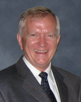
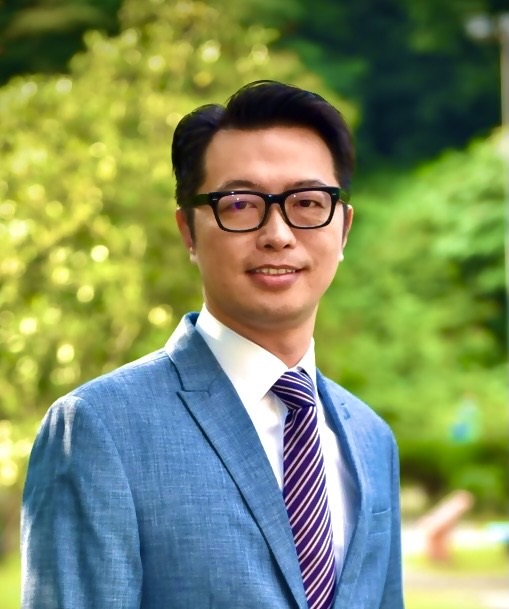
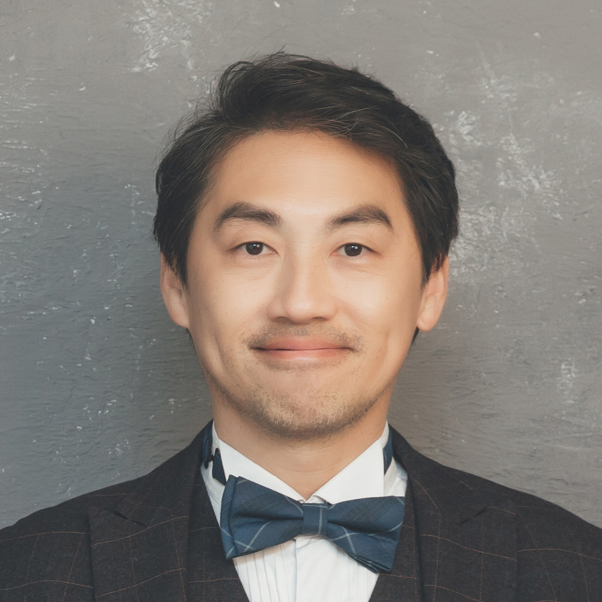
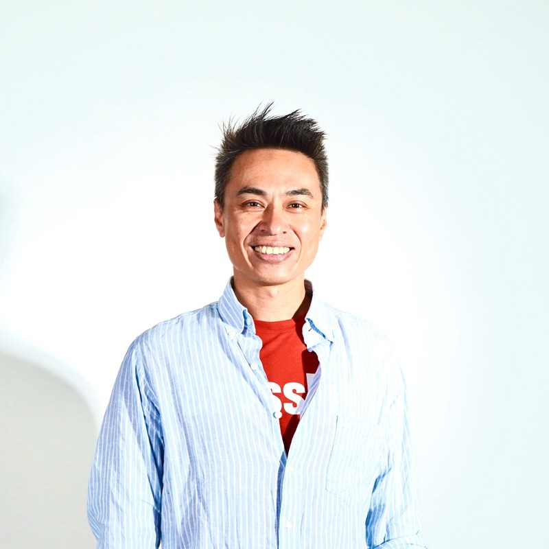
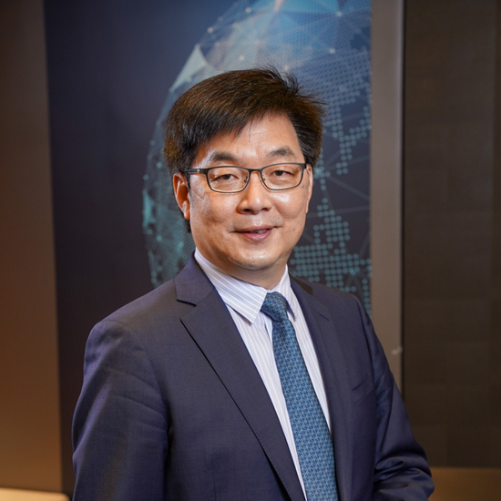

論壇介紹
替身醫療論壇主要推廣虛擬和實體替身應用於患者治療之上的概念，讓大家瞭解替身醫療可能降低其在治療過程中所需承擔的風險，並且可以跨越距離及時間的限制。推廣技術層面包含類器官、模式生物、大數據、元宇宙...等，讓一般大眾用新的角度了解目前這些技術開發有潛力替代病患本身並降低醫療上的風險，同時串聯學界及產業界，讓有潛力的技術或產品可以曝光。
此次論壇邀請到產官學研重量級講者來與我們分享後疫情時代所帶來的替身醫療的改變及發展。以期在不久的將來，透過大數據、AI、AR/VR/XR或NFT就可以讓虛擬替身實現於臨床及教學上。
演講者
-

James S. Miser
希望之城醫療中心前院長
講者簡介
Dr.Miser是小兒血液學/腫瘤學領域的國際專家，致力於開創抗癌新療法。他除了目前擔任台北醫學大學的講座教授之外也曾擔任美國希望之城醫療中心院長。在癌症研究中，他仍在多個關鍵委員會中發揮領導作用，包括兒童癌症研究組及Wilms腫瘤監測委員會。
-
Luke Dimasi
Emulate Inc.資深產品管理總監
講者簡介
Luke Dimasi是生命科學及生物技術領域的市場營銷和產品管理專家，有超過15年經驗。現任Emulate, Inc.的高級產品管理總監，他深刻理解客戶需求，將其轉化為成功策略，帶領團隊推出嶄新產品，提升科學研究。 Dimasi擁有細胞和分子生物學背景，經驗涵蓋藥物發現、基因組學和幹細胞治療等範疇。
-

鍾尊智
奈捷生物科技執行長
講者簡介
鍾尊智先生是奈捷生物科技的執行長，具備豐富的生物科技經驗。他於2002年進入行業，曾在多家知名公司擔任關鍵職位，包括Illumina在台灣的Genetech biotech Co., Ltd。他也是Instant NanoBiosensors Co., Ltd.的共同創始人，並在2020年成為Merck KGaA的戰略合作夥伴。鍾尊智先生以卓越的領導風格和不懈的創新精神，推動著奈捷生物科技不斷前進，並致力於改善生物科技行業。
-

呂隆昇
台北醫學大學附設醫院主治醫師
講者簡介
呂隆昇博士是台北醫學大學副教授，同時兼任生醫材料暨組織工程研究所、生醫工程、再生醫學學程，並為台北醫學大學附設醫院主治醫師，並同時擔任細胞治療中心主任。
-

李彥樑
精準醫學 NGS 資深基因技術專家
講者簡介
李彥樑是台灣生技業界少數資歷深厚的基因技術專家，17年來致力於基因晶片及NGS技術在臨床的應用，推動台灣首套自動罕見疾病基因NGS篩查系統，整理羊水檢測數據，並分析多個癌症研究計畫的基因數據。他專業且熱情，連結台灣基因研究與醫學，為基因醫學的發展貢獻。
-

劉逸軒
台灣大學動物科學技術學系教授
講者簡介
劉逸軒教授，台灣大學動物科學技術學系及再生醫學研究中心成員，獸醫專業學院合聘，研究專注於動物胚胎發育、組織再生，並以基因編輯等技術探究幹細胞生理。他於北卡羅萊納州立大學取得博士學位，賓州大學進行博士後研究。研究關注胚胎細胞的分化、遷移、幹細胞生成及組織再生，以促進受創組織的長期恢復與功能重建。
-

吳佳倫
優力勁聯股份有限公司營運長
講者簡介
吳佳倫目前為優力勁聯股份有限公司營運長，曾經擔任台灣運動健身產業協會創新創業委員會前執行長及亞洲運動能量集團營運長。他領導Uniigym，致力於運動科技與健身內容的創新公司，融合遊戲化概念降低運動門檻，以互動體感健身APP為主，引領健康生活方式。
-

劉彥麟
台北醫學大學附設醫院主治醫師
講者簡介
劉彥麟醫師現任臺北醫學大學附設醫院小兒腫瘤科主任，並在臺北醫學大學助理教授。專攻神經母細胞瘤、兒童腫瘤和小兒血液學，同時在造血幹細胞移植領域有豐富經驗。曾就讀成功大學醫學士，後於臺灣大學取得轉譯醫學博士學位。
-

邱仲峯
台灣放射腫瘤學會理事長
講者簡介
邱仲峯理事長是一位在腫瘤學和醫學教育領域備受尊敬的專家。他擁有國防醫學院醫學科學研究所的博士學位，並在臺北醫學大學擔任優秀的教授，專注於放射治療、癌症研究和創新治療。他的領導履歷包括醫院院長和專業主任。並且他曾獲得多個獎項，包括傑出研究計畫獎和優良教師獎，他在推動癌症護理、免疫療法和分子生物學方面的承諾，使他成為腫瘤學領域的重要人物。
活動議程
- –
開幕及來賓致詞
- 開幕及來賓致詞James S. Miser · 希望之城醫學中心
- –
- –
- –
閉幕致詞
- 閉幕致詞邱仲峯 · 台灣放射腫瘤學會理事長
演講影片
8 場演講
你正用 file:// 直接開檔案，YouTube 會擋掉嵌入播放（錯誤 153），點縮圖會另開 YouTube。部署後或用 python -m http.server 預覽就會正常。
FAQ
何謂替身醫療
替身醫療 (Avatar Medicine)旨在運用一個虛擬或實體的替身來代替病患本身來降低其在治療過程中所需承擔的風險，並且可以避免距離或時間的限制。
什麼是實體替身
透過來自人體的檢體或是與人體相似的模式生物，模擬一部份人體的疾病狀況，透過外界刺激觀察生物性反應，進而執行研究開發、檢測診斷以及治療協助。
什麼是虛擬替身
「虛擬替身」是透過來自人體的數據，在虛擬世界模擬出影像或模型，再透過運算進行預測，進而執行臨床諮詢、檢測診斷以及治療協助。
參加替身醫療論壇需要多少費用?
不需花費任何費用。只需花費您的2個小時的時間而已!!
如何報名?
只要上活動頁面連結網址，留下您的聯絡方式就可以囉!!
合作單位
延伸閱讀
精拓生技